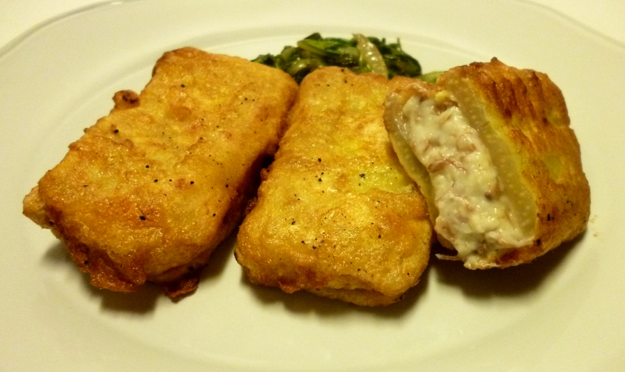

PENCAS DE ACELGA RELLENAS Y REBOZADAS
Ingredientes
- 2 manojos de acelga de penca ancha y plana -- casi 2 k
- 1 limón
- 300 g de masa de croquetas de jamón o de ternera
- Harina
- 2 huevos
- Aceite de oliva virgen extra
- Aceite de fritura

Preparar una masa de croquetas. Comenzar con la bechamel para lo que harán falta 15 g de mantequilla fundida en un cazo, en la que se sofreirán 30 g de harina fina o refinada de repostería –00. Subir el fuego, añadir 300 ml de leche entera fría y agitar con la espátula hasta que se fundan todos los grumos y la bechamel comience a espesar. Dejar cocer suave unos 15 minutos. Añadir 30 g de carne de caldo o de un resto de asado de ternera o restos de buen jamón, bien picados. Mientras termina su cocción, perfumar con un poco de nuez moscada, pimienta y añadir la sal que se considere necesaria. Extender en una fuente a un grosor de 1 cm un poco largo y dejar cuajar durante varias horas.
Mientras, limpiar las acelgas. Separar de sus hojas las pencas más blancas, más limpias y más planas. Pelarlas de las fibras que las recubren, como si fuera cardo. Cortarlas en trozos de 7 cm más o menos, pero todas iguales. Echarlas en una ensaladera con agua acidulada con zumo de limón. Serán necesarios 24 trozos de penca. Reservar las hojas y las pencas más pequeñas ya lavadas en un barreño lleno de agua clara.
Poner al fuego una cazuela o puchero pequeño lleno de agua fría en la que se disolverá un puñadito de harina, 1 cucharada de zumo de limón y 1/2 cucharada de sal gorda. Esto se llama un blanco. Cuando rompa el hervor, echar las pencas e introducir una espumadera para que las pencas no floten, porque se pondrían negras. Tendrán que cocer unos 15 minutos o hasta que un palillo las atraviese pero que aún no estén muy blandas.
Mientras cuecen las pencas, limpiar el resto de las acelgas, escurrirlas y cortarlas en trozos.
Escurrir las pencas y dejarlas en su colador hasta que estén casi secas. Cortar la bechamel en trozos un poco más pequeños que las pencas. Formar unos bocadillos de masa de croquetas entre 2 pencas de acelga. Saldrán 12 piezas.
Calentar el aceite de fritura. Mientras se calienta, acercar una sartén grande al fuego con 2-3 cucharadas de aceite de oliva. Echar las hojas reservadas de acelga en la sartén y sofreír bien durante unos 5-6 minutos, hasta que estén lacias y tiernas. Comprobar el grado de sazón –la acelga es fuerte y salada– y añadir pimienta y, si es necesaria, sal.
Pasar los trozos de penca rellena por harina, los huevos batidos con unas gotas de agua y freírlos en el aceite bien caliente. Depositar sobre papel absorbente para retirar el exceso de grasa.
Servir las pencas rellenas calientes alrededor del sofrito de acelgas.